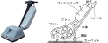
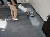
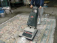
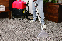
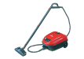

2023年
問題148 カーペット清掃用機械に関する次の記述のうち，最も不適当なものはどれか．
（1）カーペットスイーパは，パイル表面の粗ごみを除去するのに適している．
（2）洗剤供給式床磨き機は，ウィルトンカーペットの洗浄に適している
（3）スチーム洗浄機は，カーペットのしみ取りにも使われる．
（4）アップライト型真空掃除機は，床を回転ブラシで描きながら，ごみやほこりを掃除機内に吸い込む構造を有する．
（5）エクストラクタは，ノズルから洗浄液を噴射して，直ちに吸引する構造になっている．
2023年
問題148 正解（2） 頻出度AAA
洗剤供給式床磨き機は，化学繊維のタフテッドカーペット等の洗浄に適している．
カーペット（繊維）床の清掃維持管理については下記のとおり．
1．パイル表面の粗ごみは，カーペットスイーパ（2023-148-1図）で除去する．
2023-148-1図 カーペットスイーパ
2．繊維床に付着した土砂やほこりは時間の経過とともにパイルの中に沈みこむので，吸引力の強いアップライト型真空掃除機（2023-148-2図）などで吸引除去する．
2023-148-2図 アップライト型真空掃除機

左写真 出典 蔵王産業㈱
https://www.zaohnet.co.jp/products/spb/
3．汚れが目立つ場所ではスポットクリーニングを行う．
繊維床のスポットクリーニングは，除じんで除去できない汚れがパイルの上部にあるうちに行う洗浄である．洗剤を含んだ粉末を使ったパウダー方式，拭取り方式，エクストラクション方式などがある．
4．しみは，液体の異物が時間の経過により染着したものであるから，日常清掃で，染着する前にできるだけ速やかに拭取ることが望ましい．事務所建築物の繊維床材では，60％以上が親水性の染みである．
5．全面クリーニングはパイル奥の汚れ除去と，全体の調和を保つために行う.
シャンプー後にすすぎ洗いをする方法が，汚れと残留洗剤の除去に最も適している．用いる機材は，洗剤供給式床磨き機，ローラブラシ方式機械，噴射吸引式機械，エクストラクタ，スチーム洗浄機がある．
1）洗剤供給式の床磨き機（2023-148-3図）は，一般のタンク式スクラバーマシンに比べ，カーペットの繊維による抵抗が増すため，カーペット専用のもの（低速回転）を使用する．この機械は，カーペットを敷いたままでシャンプークリーニングする方法として古くから開発され，普及している．ブラシが回転することによって，洗剤がカーペットのパイルにこすりつけられて発泡し，その泡によってクリーニングが行われる．洗浄効果は大きいが，パイルを損傷する恐れがあるので，ウールのウィルトンカーペット※よりは，化学繊維のタフテッドカーペット※等の洗浄に適している．泡は別の真空掃除機によって吸引除去する．
2023-148-3図 洗剤供給式の床磨き機によるカーペット洗浄

出典 シンテックサービス株式会社
https://www.shintech.biz/construction/766/
2）ローラブラシ方式機械（2023-148-4図）は，1）の方式を改良したもので，洗剤が機械内部で乾燥した泡となって供給され（この意味からドライフォーム方式とも呼ばれる），ローラー型の縦回転ブラシがパイルを洗浄する．カーペットの基布を濡らして収縮を起こす恐れが少なく，パイルに対するあたりも柔らかで，パイルを傷めることが少ないが，洗浄力はスクラバ方式の機械よりも劣る．ウィルトンカーペット等のウールカーペットに適した機械である．
2023-148-4図 ローラブラシ方式機械によるカーペット洗浄

出典 有限会社カーペットクリーン東海
http://www.carpet.co.jp/services-details-02.html
3）噴射吸引式機械（エクストラクタ）は，操作杖（ウォンド）の先端にあるノズルから洗剤液を噴射して，ただちに吸引口（スリット）から吸引する構造になっており，これをカーペット上で操作することによって洗浄が行われる．シャンプークリーニングが洗剤の泡で洗浄するのに対して，この機械は洗剤液そのものでパイルを洗浄する．多量の液を噴射するので水分に耐えるカーペットに適する機械である．この機械は，シャンプークリーニング後のパイルに残留した洗剤分を，清水又は温水ですすぎ洗いをする場合に使用されることも多い（2023-148-5図参照）．
2023-148-5図 噴射吸引式機械（エクストラクタ）によるカーペットの洗浄

出典 ダイキンマルエス
https://duskin-maruesu.com/house/carpet/ を基に作成
4）スチーム洗浄機（2023-148-6図）によるカーペットの洗浄は，海外では以前より使われていたが我が国では近年普及してきた．スチーム洗浄機は，高温の水蒸気で汚れを分解するため，エクストラクタより残留水分が少ない．カーペットのしみ取りにも利用される．
2023-148-6図 スチーム洗浄機の例

出典 山崎産業株式会社 環境用品総合カタログ
https://catalog2.yamazaki-sangyo.co.jp/index.html
6．冬季の低湿度による静電気の帯電防止に，帯電防止剤を散布すると一定の効果がある．
7．パイルのほつれ等はすぐに補修する．施工初期でのジョイント部の毛羽立ちはカットする．
※ カーペットの種類2023-148-1表参照．
2023-148-1表 カーペットの種類
| ウィルトンカーペット | 18世紀中，イギリスウィルトン地方で始まったカーペット．パイル密が細かくパイルの抜けがなく耐久性がある． 機械織りでパイル糸は純毛，厚手でしっかりしたカーペットだが，水分に弱く収縮を起こす．天然素材なのでメンテナンスは難しい． |
| タフテッドカーペット | 基布に刺繍のようにミシン針でパイルを刺し込んでゆき，パイルの抜けを防ぐため，裏面に合成ゴムラテックスを塗り，塩ビなどの化粧裏地を貼り付ける．アメリカで開発され，従来のカーペットの30倍の生産速度を誇る．アクリルやナイロンなどをパイル糸に使用したものが多く，オフィスなどのカーペットタイルに広く使われている．強度や磨耗性が高いが，静電気を帯びやすく，多量の水に対しては収縮を起こす． |
| ニードルパンチカーペット | ポリプロピレンなどを圧着した表面がフラットな不織カーペット．ウェブという短繊維を薄く広く伸ばしたものを重ね合わせ，多数のニードル（針）で突き刺してフェルト状にする．裏面は，ラテックスコーティングされ，カットが自由，価格も安価．丈夫であるが弾力性やデザイン性には劣る．しみは落ちにくい． |